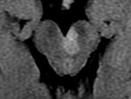

( of )
Correct: 0
Incorrect: 0
A 65 year old woman reports new double vision. She has been treated for diabetes, but says that her blood sugar has been normal and past ophthalmologic examinations have not disclosed retinopathy.
Where is the lesion?
Incorrect
Incorrect
Incorrect
Correct!
Caution: the lesion is often very small or perhaps not even evident. If high-definition MRI is negative, be sure you have excluded multifocal disease. Once that has been done, you can usually presume “imaging-occult” non-embolic ischemic brainstem stroke, and direct treatment at arteriosclerotic risk factors.

This patient has a left third nerve palsy, but it is not isolated! She also has a mild right hemiparesis. The combination of these features localizes to the cerebral peduncle on the left side of the ventral midbrain. It is called a “Weber syndrome.” The peduncular lesion damages the descending corticospinal axons, which later cross to the opposite side, causing a contralateral hemiparesis of the face, arm, and leg. Brain vascular imaging, which is urgent and mandatory in acute isolated third nerve palsy, is not the right approach here. You want imaging that will visualize the midbrain—high definition MRI. The most common cause is ischemic stroke, so you would be looking at diffusion-weighted MRI.